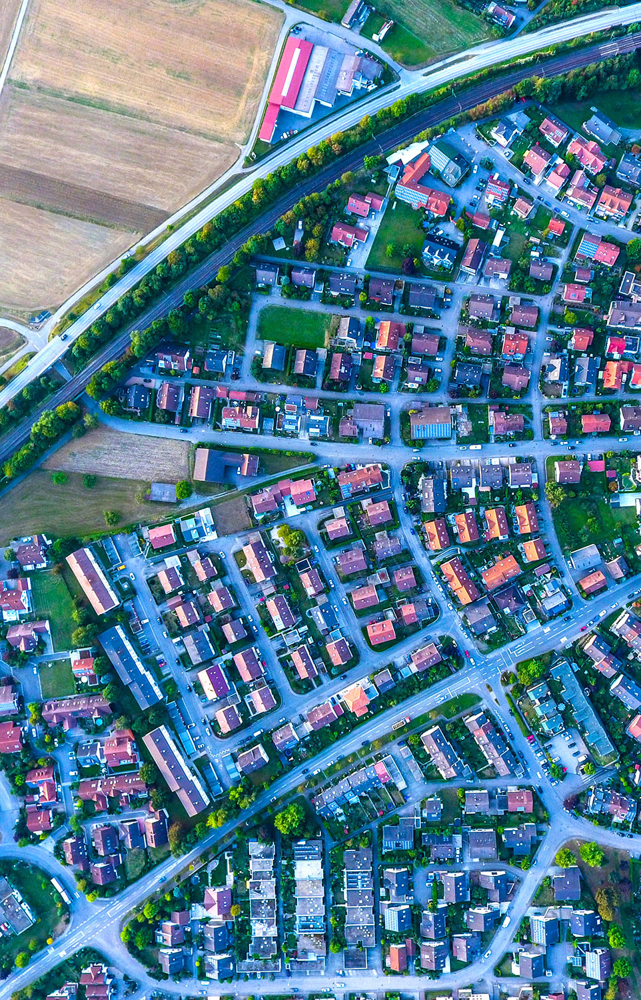

Data Interactives
Immigration in America, explained through data visualization
A New Profile of Immigrants in America
Date: February 15, 2021
The immigrant population is changing in the United States, with more immigrants coming from India and China than Mexico in recent years. In this NAE data interactive, we explore immigration at a state level, looking at where newcomers are coming from, which languages they speak, and what jobs they’re doing, all using newly released data from the American Community Survey.
You can find more details by hovering over the graphics. Clicking on a state will direct you to Map the Impact, where you can learn more about immigrants in each state.
Immigrants are becoming more diverse in terms of where they come from.
Mexico has long been the top country of birth for immigrants to the United States, but its share is dropping. In 2014, 27.7 percent of immigrants in America came from Mexico, followed by India and the Philippines.
By 2019, Mexican immigrants’ share had fallen to 24.3 percent, with the population shrinking by nearly 843,000 people from 2014. In fact, more immigrants have returned to Mexico than have entered the United States in recent years, amid stricter immigration enforcement in the United States and shifting labor market conditions.
Meanwhile, shares of immigrants from India and China rose. The number of Indian immigrants increased by at least 505,000 people between 2014 and 2019, while China replaced the Philippines as the third most common country of birth, with the number of Chinese immigrants growing by more than 344,000.
These shifts are partly due to the changing demographics of the new arrivals.
Even though around a quarter of all immigrants in the United States were born in Mexico, only 11.9 percent of recent immigrants arriving between 2014 and 2019 came from Mexico.
Meanwhile, Indian immigrants made up 10.7 percent of recent immigrants, much higher than their 6.0 percent share of the overall immigrant population. Similarly, for Chinese immigrants, their share of recent immigrants, 7.7 percent, is also higher than their share of all immigrants, 5.0 percent. A recent NAE report also found that immigration from Asia has outpaced immigration from Latin America since 2010.
At the state level, Mexico dominates as the most common country of birth for immigrants in 31 states.
Meanwhile, Canada was the top country of birth in five states--all along the U.S.-Canada border. India was the most popular in four states, and El Salvador for Washington, DC and the two states that neighbor it. El Salvador is one of the ten countries with Temporary Protective Status (TPS), allowing people from these countries to flee dire situations such as civil wars and natural disasters and live and work in the United States.
Among recent immigrants, India and Mexico top the list of birth countries.
India is the top country of birth for recent immigrants in 14 states, mostly in the Northeast and Midwest, compared to Mexico in 11 states. China follows by having the largest share of recent immigrants in three states.
Spanish is the most common language for immigrants in the majority of U.S. states, followed by English.
Most immigrants speak Spanish at home in 37 states and the District of Columbia, English in 11 states, and Filipino in Alaska and Hawaii, where immigrants from the Philippines made up the largest immigrant minority group.
After Spanish and English, Hindi and Chinese are the most popular languages for immigrants.
Hindi was the most popular after English and Spanish in 17 states, followed by Chinese in 11 states. For the other states, there is notably diversity, including Arabic, Filipino, French, Portuguese and Vietnamese. This is important for U.S. industries since the demand for bilingual workers has been rising in recent years.
Many coming from different language backgrounds, immigrants also have high levels of English proficiency.
At least three out of four immigrants reported speaking English well or very well in 38 states and Washington, DC. Proficiency in English makes it easier for immigrant workers to integrate into the U.S. labor market and local communities.
During an on-going Covid-19 pandemic, healthcare is the most common field for high-skilled immigrants in 14 states.
As the country continues to fight the Covid-19 pandemic, hundreds of thousands of immigrant healthcare professionals are on the frontlines to save lives and curb the disease’s spread
Management occupations were also common for high-skilled immigrants in 13 states, computer-related occupations in seven states, and education occupations in another seven states.
Among high-skilled U.S-born workers, management jobs are the most common for them in 43 states.
A Pew report noted that U.S.-born workers are more likely to take on jobs that require a higher level of managerial and social skills, including management jobs. Education is the top occupation for high-skilled U.S.-born workers in seven states, and healthcare in one state.
For lesser-skilled immigrants, production, construction, and transportation jobs are the most common occupations.
As our economy tries to rebound amid the Covid-19 crisis, immigrants are working hard to support America’s manufacturing supply chain and infrastructure-related industries, making these workers essential to the recovery process in the months and years ahead.
In comparison, office administrative jobs are the most common occupations for their U.S.-born counterparts.
Only nine states have jobs other than office administrative jobs as the top occupations for lesser-skilled U.S.-born workers, showing that immigrant and U.S.-born workers without a college degree often complement each other when meeting the various needs of the U.S. labor market.
Immigrants in America are becoming increasingly diverse. This data interactive highlights how that diversity in terms of birthplace, language, and occupation allows immigrants to bring evermore unique skills, cultures, and experiences to communities across the United States. Through their contributions to the economy and--particularly during the coronavirus pandemic--the healthcare industry, immigrants, while diverse, like all Americans, ultimately strive to build a brighter future for themselves, their families, and American society as a whole.